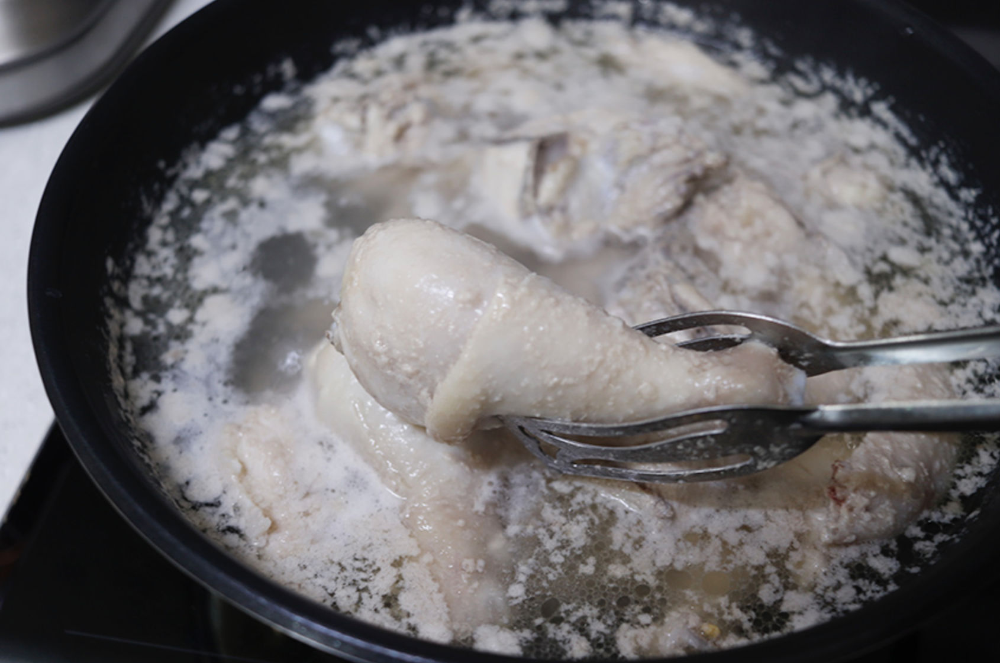
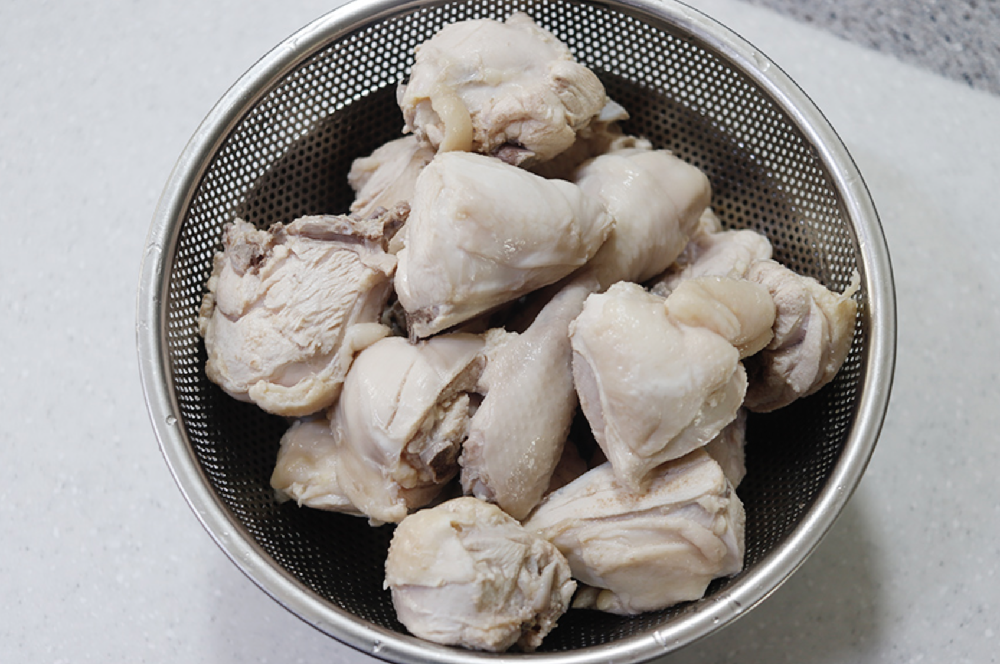
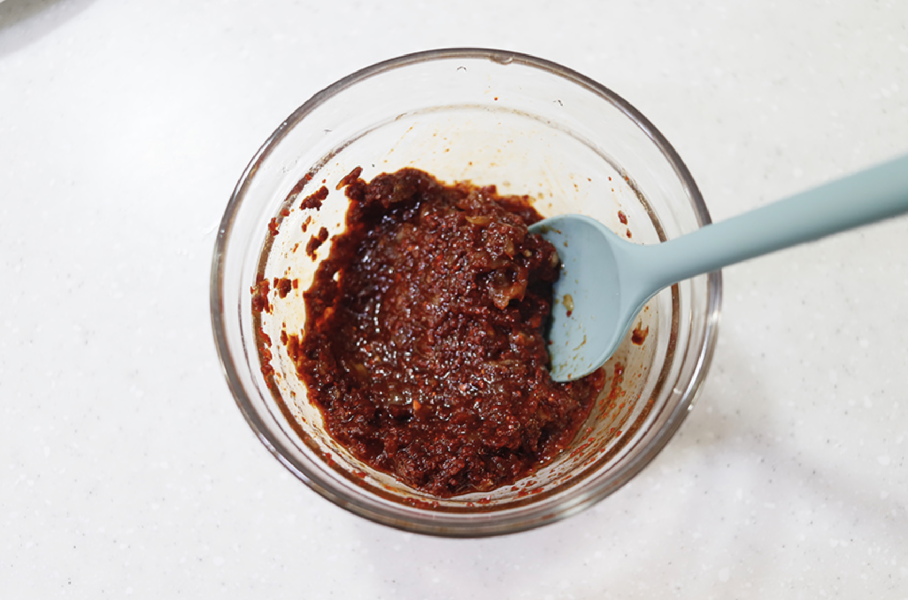
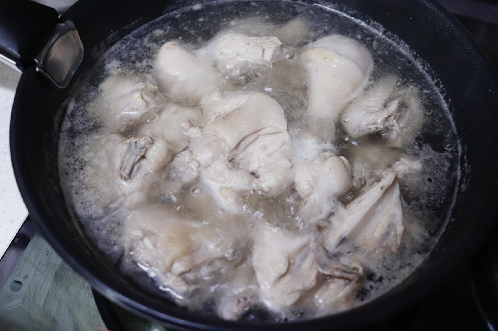
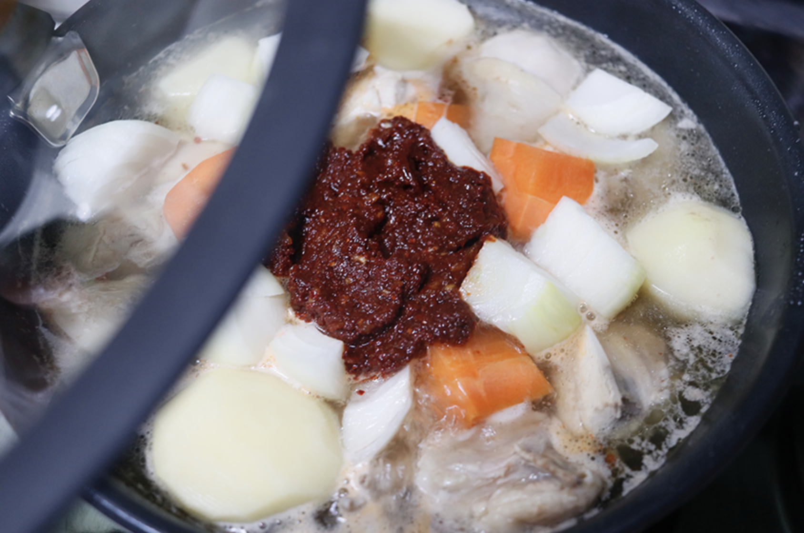
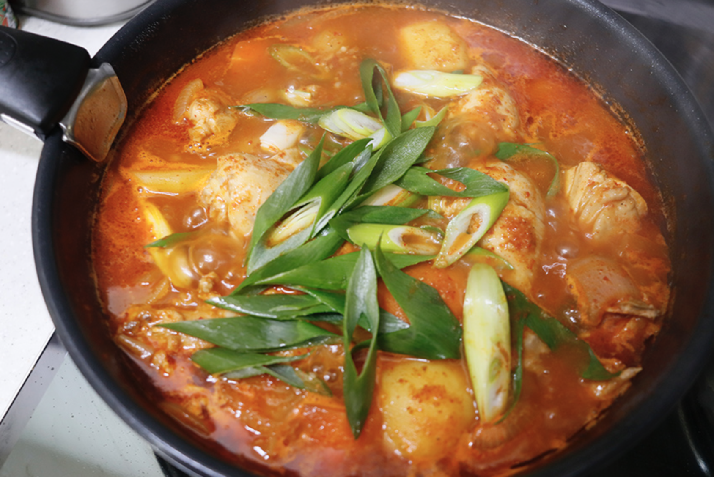

요리법
1)요리재료
재료 : 닭도리탕용 닭 1.2kg, 감자 2개, 양파 1개, 대파 한 대, 당근 85g, 진강장 9스푼, 고춧가루 4스푼, 황설탈 3스푼, 다진마늘 2스푼, 후춧가루약간, 물 700ml
2)기본정보
조리시간 : 20분 내외
분량 : 2인분 기준
3)요리과정

01. 흐르는 물에 닭을 씻고 난 뒤 물에 닭을 넣고 끓여 데친다.

02. 데친 후 닭은 찬물에 씻은뒤 체에 받쳐 물기를 제거한다. 그리고 야채를 손질한다.

03. 진간장, 고춧가루, 다진마늘, 후춧가루를 섞어 양념장을 만든다.

04. 냄비에 닭을 넣고 물 700ml를 넣고 설탕을 넣고 끓인다.

05. 썰어놓은 야채를 넣고 양념장을 넣고 끓인다.

06. 마무리로 대파를 넣는다.